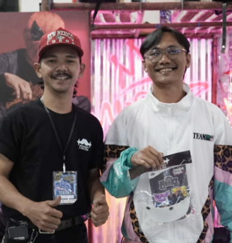
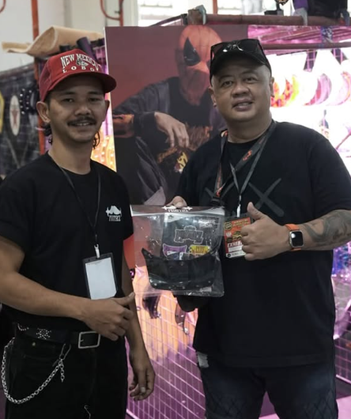

BOOTH FITTING
★★★★★

“Fitting ke helm open-face Bell 500 langsung pas presisi tanpa goyang. Finishing akrilik tebal rapi dan bonus sticker pack-nya gokil abis! Rekomendasi buat anak kustom.”
Bukti nyata dari kawan-kawan riders di jalanan. Dari booth event kustomfest hingga harian jalanan aspal, visor MUSTAZ CRAFT teruji tahan banting, anti getar, dan berkarakter.
“Fitting ke helm open-face Bell 500 langsung pas presisi tanpa goyang. Finishing akrilik tebal rapi dan bonus sticker pack-nya gokil abis! Rekomendasi buat anak kustom.”

“Bahan duckbill pet-nya solid banget, bukan plastik abal-abal tipis pabrikan. Dipakai touring panas terik tetep adem dan gak gampang baret. Mantap brother!”

“Desain pet flame-nya eye catching parah! Packaging ziplock eksklusif kayak brand streetwear luar. Pas dipasang ke helm retro langsung auto ganteng motoran santai.”

“Spikes studded-nya bener-bener gahar pas dipasang ke helm custom full cat gua. Kancing snap solid ga gampang copot walau kena angin kencang. 100% riding with pride!”

“Kancing snap kuningan asli kenceng banget pas ngebut di jalur luar kota. Warna flame birunya tajem dan materialnya tahan banting. Bakal order varian lain!”
Tag Instagram kami di @mustazcraft atau kirim foto garasi Anda via WhatsApp untuk masuk ke Community Dispatch berikutnya.
KIRIM VIA WHATSAPP →